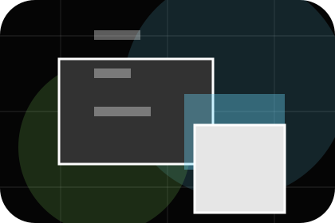
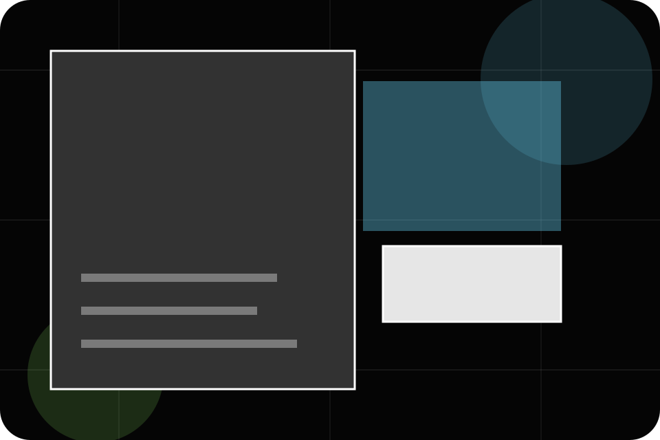
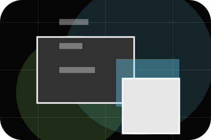
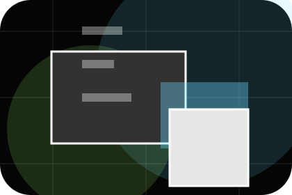
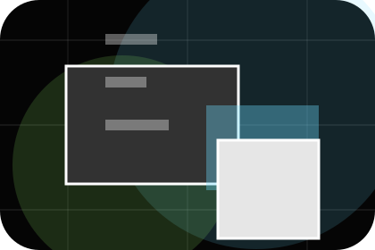
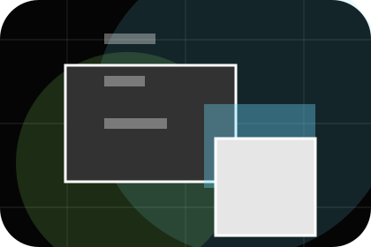
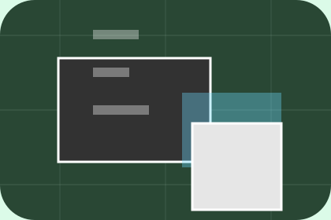

Before
The uncertainty, delay, or missed opportunity visitors bring into leads.
Results / 01
Results opens as a clear marketing decision hub: what Spark offers, who it helps, why it matters, and which route to take first.
The first screen combines positioning, proof, primary action, and fast internal navigation, so people can act immediately or compare the rest of the results route with context.
Immersive case-study hero
Select the closest route and Spark keeps the next step, proof, and follow-up expectation aligned with results and creative confidence.

Results / 02
Leads shows what changes after the work: clearer decisions, visible progress, and proof points that connect the offer to real outcomes.
The layout connects before-and-after thinking with measured outcomes, making the result easy to scan without promising what the business cannot guarantee.
Explore Results
The uncertainty, delay, or missed opportunity visitors bring into leads.
The clearer, safer, or more valuable state Spark is designed to support.

The visible cue that connects leads to a believable decision, not a loose claim.
Results / 03
Sales shows what changes after the work: clearer decisions, visible progress, and proof points that connect the offer to real outcomes.
The layout connects before-and-after thinking with measured outcomes, making the result easy to scan without promising what the business cannot guarantee.
Explore ResultsSpark structures sales around before, after, and a clear next route so visitors can compare the block quickly before they send a campaign brief.
Send Campaign BriefResults / 04
Reach shows what changes after the work: clearer decisions, visible progress, and proof points that connect the offer to real outcomes.
The layout connects before-and-after thinking with measured outcomes, making the result easy to scan without promising what the business cannot guarantee.
Explore ResultsThe uncertainty, delay, or missed opportunity visitors bring into reach.
The clearer, safer, or more valuable state Spark is designed to support.

The visible cue that connects reach to a believable decision, not a loose claim.
Results / 05
Lift shows what changes after the work: clearer decisions, visible progress, and proof points that connect the offer to real outcomes.
The layout connects before-and-after thinking with measured outcomes, making the result easy to scan without promising what the business cannot guarantee.
Explore ResultsThe uncertainty, delay, or missed opportunity visitors bring into lift.
Results / 06
Metrics shows what changes after the work: clearer decisions, visible progress, and proof points that connect the offer to real outcomes.
The layout connects before-and-after thinking with measured outcomes, making the result easy to scan without promising what the business cannot guarantee.
Explore ResultsThe uncertainty, delay, or missed opportunity visitors bring into metrics.

The clearer, safer, or more valuable state Spark is designed to support.

The visible cue that connects metrics to a believable decision, not a loose claim.
Results / 07
Reviews shows what changes after the work: clearer decisions, visible progress, and proof points that connect the offer to real outcomes.
The layout connects before-and-after thinking with measured outcomes, making the result easy to scan without promising what the business cannot guarantee.
Explore ResultsThe uncertainty, delay, or missed opportunity visitors bring into reviews.
The clearer, safer, or more valuable state Spark is designed to support.
The visible cue that connects reviews to a believable decision, not a loose claim.
Results / 08
Before shows what changes after the work: clearer decisions, visible progress, and proof points that connect the offer to real outcomes.
The layout connects before-and-after thinking with measured outcomes, making the result easy to scan without promising what the business cannot guarantee.
Explore ResultsThe uncertainty, delay, or missed opportunity visitors bring into before.
The clearer, safer, or more valuable state Spark is designed to support.
The visible cue that connects before to a believable decision, not a loose claim.
Results / 09
Proof shows what changes after the work: clearer decisions, visible progress, and proof points that connect the offer to real outcomes.
The layout connects before-and-after thinking with measured outcomes, making the result easy to scan without promising what the business cannot guarantee.
Explore ResultsThe uncertainty, delay, or missed opportunity visitors bring into proof.
The clearer, safer, or more valuable state Spark is designed to support.
The visible cue that connects proof to a believable decision, not a loose claim.
Results / 10
Spark closes the results route with a clear action, a quick reminder of the value, and a low-friction way to send a campaign brief.
Visitors who are ready can use the primary action. Visitors who are still comparing can scan the section links, proof, and support routes before they send a campaign brief.
Send Campaign BriefThe final block keeps the choice simple: act now, compare one more proof route, or send enough detail for a focused response.
Send Campaign Briefresults and creative confidence
A marketing agency site with immersive black work panels, sharp case filters, results proof, and brief routes. Results ends with a direct path to send a campaign brief, plus enough context for visitors who still need to compare.

Send Campaign BriefInformation is provided for planning and should be reviewed for the final client, location, and operating rules.